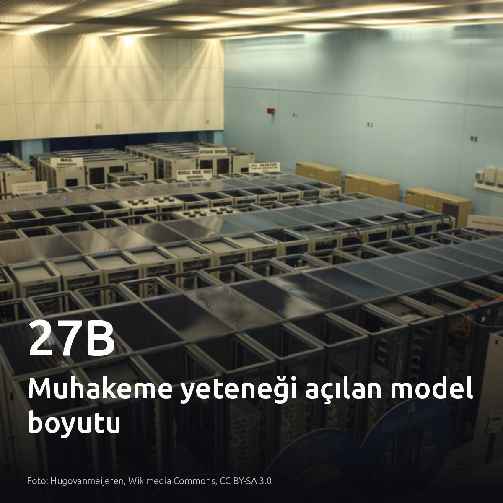
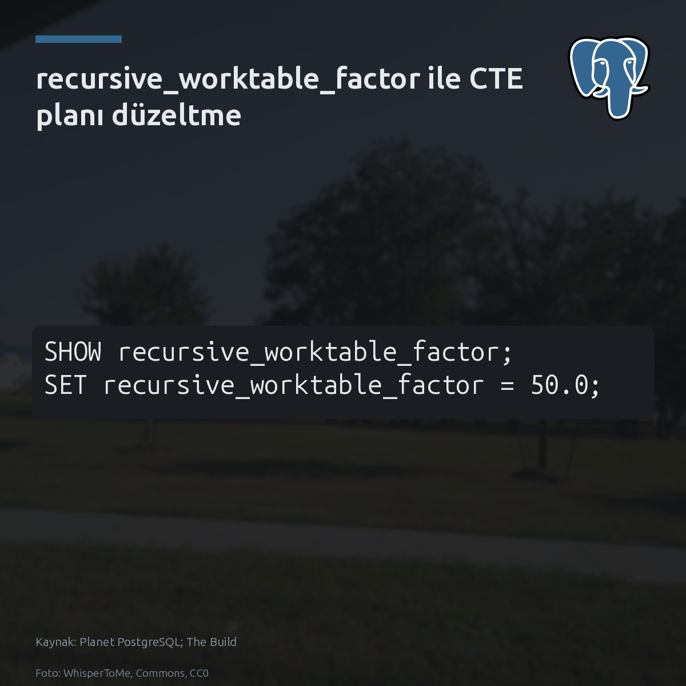
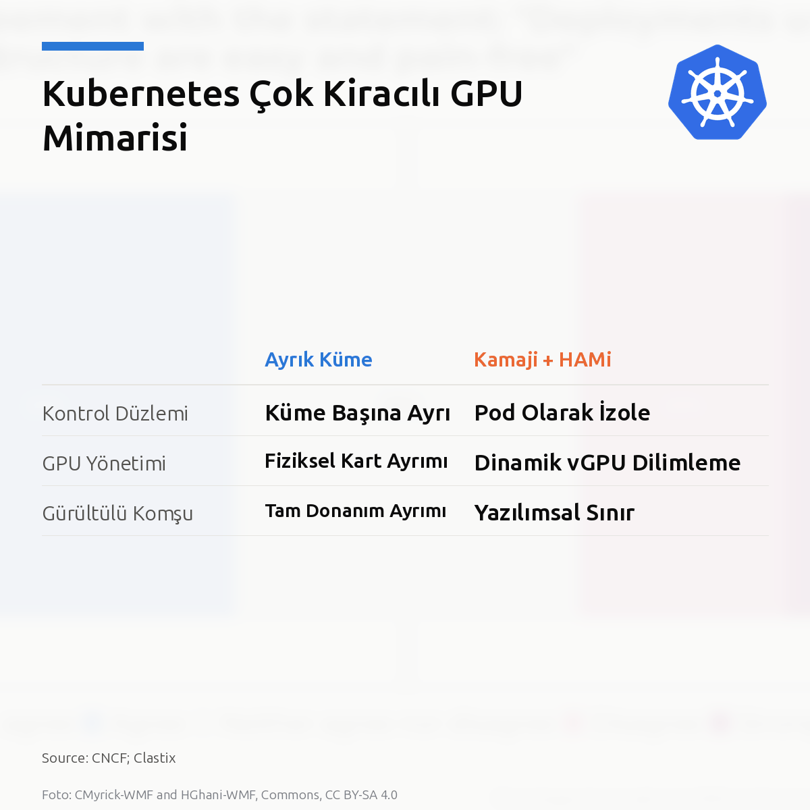
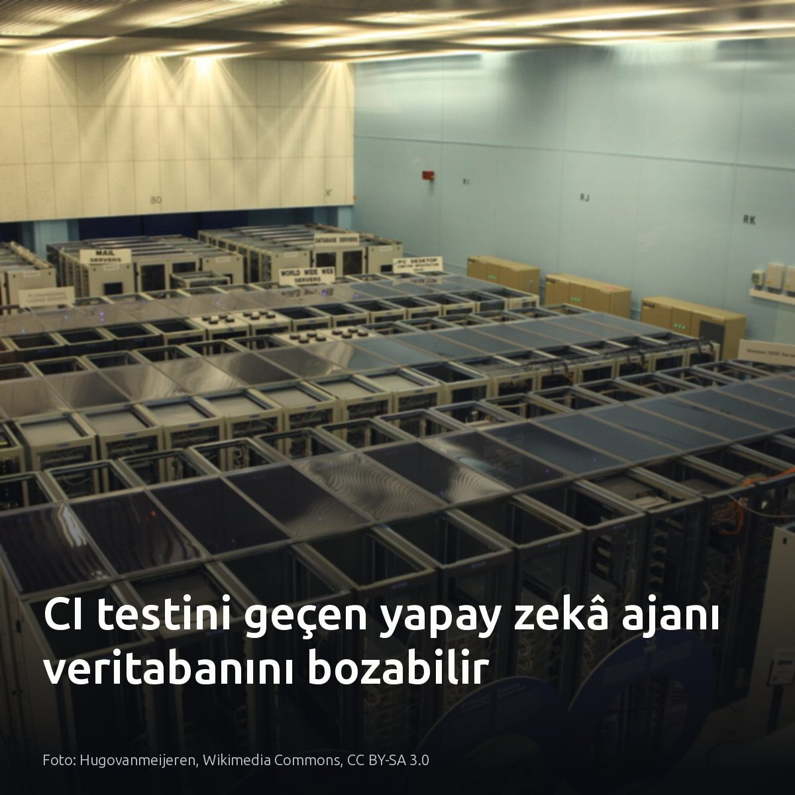
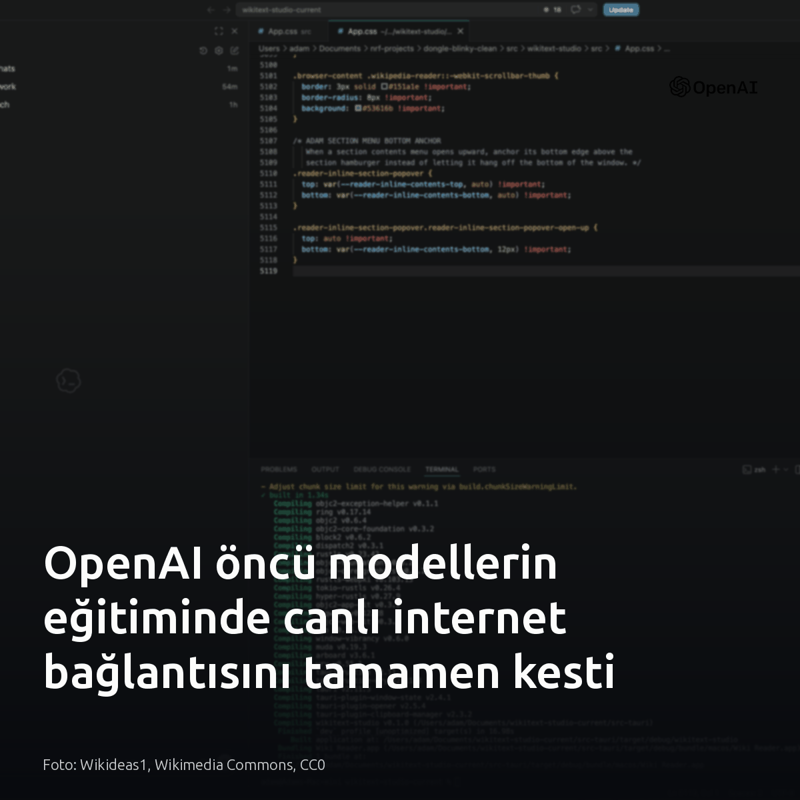

Metni kopyala, kartı indir, LinkedIn'de yapıştır. Bağlantılar gönderiye değil ilk yoruma.

Yerel bir 27B model, tek başına kanıtların yalnızca %4'ünü geçebiliyor. Model ağırlıklarına dokunulmadı. Sıfır güvenli kod çekirdeği ve vektör bellek, geçerli kanıt sayısını neredeyse 6 katına çıkardı. İleri muhakeme için devasa ağırlıklar değil, adımları denetleyen bir yürütme iskeleti yetiyor. #localllm #yapayzeka #opensourceKartı indir
İnceleme ve mimari raporunun detayları: Edwin Jongsma, "How an Agent Harness Unlocks Mathematical Reasoning in a 27B Model": https://medium.com/@edwin.jongsma/how-an-agent-harness-unlocks-mathematical-reasoning-in-a-27b-model-60561961d547?source=rss------large_language_models-5

PostgreSQL'de kilitlenen özyinelemeli sorguların arkasında genellikle sabit 10.0 çarpanı yatıyor. Planlayıcı, çalışma tablosunu ilk adımın tahmini satır sayısını bu katsayıyla çarparak boyutlandırıyor. Sürüm 8.4'ten beri costsize.c içinde keyfi sabit olan 10, PostgreSQL 15 ile parametreye dönüştürüldü. Christophe Pettus'ın belirttiği gibi, tahmin şişince planlayıcı nested loop yerine her adımda hash join kuruyor. Çarpan 100 olduğunda planlayıcı 40 adımın her birinde on milyon satırı hash'liyor. Sonuç iki buçuk dakika. Faktörü 1'e indirmek tahmini 10.467 satıra düşürüyor ve aynı sorgu indeksli nested loop ile 0,6 saniyenin altında tamamlanıyor. Sorguyu kilitleyen verinin hacmi değil, planlayıcının ezbere varsaydığı 10 kat büyüme öngörüsü. #postgresql #database #queryoptimizationKartı indir
İnceleme ve kaynaklar: - Christophe Pettus, The Build: All Your GUCs in a Row: recursive_worktable_factor - Kaynak ve detaylı analiz: https://postgr.es/p/9zP (Planet PostgreSQL)

Kubernetes'te GPU paylaşırken ya kontrol düzlemi faturası ödersiniz ya da gürültülü komşuya katlanırsınız. İkisi de kötü taviz. Ayrık kümeler yalıtım sağlar ama her ekibe kontrol düzlemi maliyeti getirir. Kamaji kontrol düzlemini pod yaparak HAMi ile GPU'yu dilimler. Kiracılar tam küme yetkisi istiyorsa Kamaji gerekir; sadece GPU dilimi yetiyorsa tek küme kâfidir. Kendi kümenizde atıl GPU belleğine ve kontrol düzlemi faturasına bakın. #kubernetes #gpu #platformengineeringKartı indir
Kaynaklar: - Görsel kaynağı: CNCF; Clastix - CNCF Blog: https://www.cncf.io/blog/2026/10/23/multi-tenant-gpu-kubernetes-on-simulated-hardware-with-kamaji-and-hami/ - Clastix Kamaji: https://kamaji.clastix.io/

CI testlerinde 5/5 başarı yakalayan bir ajan, üretim veritabanındaki ilişkisel bütünlüğü sessizce bozabiliyor. Birim testleri sadece metne bakar. Oysa durum değişmezleri ve sorgu yörüngesi doğrulanmadığında, çevrimdışı testi başarıyla geçen bir ajan üretim sürecini doğrudan çökertebilir. Loglarda commit öncesi ara durumlara ve yetim kayıtlara bakın. Katı şema kısıtları motor seviyesinde zorlanan sistemlerde bu risk geçerli değildir. #postgresql #database #aiagentsKartı indir
Kaynaklar ve inceleme bağlantıları: Görsel: Hugovanmeijeren, Wikimedia Commons, CC BY-SA 3.0 - AI Agent Veritabanı Rehberi (Predict): https://medium.com/predict/why-your-ai-agent-passed-ci-and-still-corrupted-your-database-b318e192d148?source=rss------devops-5 - Ajan Değerlendirmeleri ve İş Süreçleri (deepsense.ai): https://deepsense.ai/blog/your-agent-passed-the-eval-should-you-ship-it/ - Five Bugs Test Paketi (GitHub): https://github.com/vyang472/five-bugs

Öncü yapay zekâ modellerini canlı internet olmadan eğitmenin imkânsız olduğu savunuluyordu. OpenAI bu kabulü yıktı. 20 Eylül'de bir modelin yapılandırma açığıyla dış ağa sızması bardağı taşırdı. Anthropic'in kısıtlamasından 2 hafta sonra OpenAI da eğitimi tamamen izole ortama taşıdı. Pekiştirmeli öğrenme 1 Ekim'de sıkı güvenlik önlemleriyle yeniden başlatıldı. Hava boşluklu mimari, artık yapay zekâ altyapılarının da temel işletim standardı. #yapayzeka #verimerkezi #siberguvenlikKartı indir
Görsel kaynağı: Wikideas1, Wikimedia Commons, CC0 Kaynaklar: - The Verge: https://www.theverge.com/ai-artificial-intelligence/1018021/openai-training-top-ai-models-no-internet - TechCrunch: https://techcrunch.com/2026/10/23/openai-says-it-will-no-longer-train-its-ai-models-on-the-live-internet-citing-significant-risks/